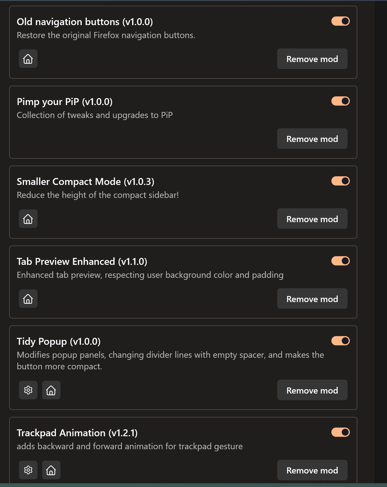

<!DOCTYPE html>
<html lang="en">
<head>
    <meta charset="UTF-8">
    <title>Noé Bachofner</title>
</head>
<body>

</body>
</html>

<!DOCTYPE html>
<html lang="de">
<head>
    <meta charset="UTF-8">
    <meta name="viewport" content="width=device-width, initial-scale=1.0">
    <title>Scroll Progress Page</title>
    <link rel="stylesheet" href="css/index.css">
    <link rel="stylesheet" href="css/general.css">
    <link rel="stylesheet" href="css/picture.css">
</head>
<body>
<a href="index.html" class="logo">
    
</a>
<nav>


    <ul class="nav-icons">
        <div class="progress-line" id="progressLine"></div>
        <li class="nav-icon active" data-section="section1">
            <svg viewBox="0 0 24 24">
                <path d="M10 20v-6h4v6h5v-8h3L12 3 2 12h3v8z"/>
            </svg>
        </li>
        <li class="nav-icon" data-section="section2">
            <svg viewBox="0 0 24 24">
                <path d="M12 12c2.21 0 4-1.79 4-4s-1.79-4-4-4-4 1.79-4 4 1.79 4 4 4zm0 2c-2.67 0-8 1.34-8 4v2h16v-2c0-2.66-5.33-4-8-4z"/>
            </svg>
        </li>
        <li class="nav-icon" data-section="section3">
            <svg viewBox="0 0 24 24">
                <path d="M20 6h-2.18c.11-.31.18-.65.18-1 0-1.66-1.34-3-3-3-1.05 0-1.96.54-2.5 1.35l-.5.67-.5-.68C10.96 2.54 10.05 2 9 2 7.34 2 6 3.34 6 5c0 .35.07.69.18 1H4c-1.11 0-1.99.89-1.99 2L2 19c0 1.11.89 2 2 2h16c1.11 0 2-.89 2-2V8c0-1.11-.89-2-2-2zm-5-2c.55 0 1 .45 1 1s-.45 1-1 1-1-.45-1-1 .45-1 1-1zM9 4c.55 0 1 .45 1 1s-.45 1-1 1-1-.45-1-1 .45-1 1-1zm11 15H4v-2h16v2zm0-5H4V8h5.08L7 10.83 8.62 12 11 8.76l1-1.36 1 1.36L15.38 12 17 10.83 14.92 8H20v6z"/>
            </svg>
        </li>
        <li class="nav-icon" data-section="section4">
            <svg viewBox="0 0 24 24">
                <path d="M20 4H4c-1.1 0-1.99.9-1.99 2L2 18c0 1.1.9 2 2 2h16c1.1 0 2-.9 2-2V6c0-1.1-.9-2-2-2zm0 4l-8 5-8-5V6l8 5 8-5v2z"/>
            </svg>
        </li>
    </ul>
</nav>

<section id="section1">
    <div class="section-split">
        <div class="image-container">
            
        </div>
        <div class="text-container">
            <h1>Sektion 1 - Willkommen</h1>
            <p>Dies ist die erste Sektion. Scrolle nach unten, um die Progress Bar zu sehen, wie sie sich füllt.</p>
            <p>Hier kannst du weiteren Text hinzufügen, der rechts neben dem Bild erscheint.</p>
        </div>
    </div>
</section>

<section id="section2">
    <div class="section-content">
        <h1>Sektion 2 - Über uns</h1>
        <p>Hier steht interessanter Content über dein Projekt. Die Progress Bar zeigt deinen Fortschritt an.</p>
    </div>
</section>

<section id="section3">
    <div class="section-content">
        <h1>Sektion 3 - Services</h1>
        <p>Weitere Informationen über deine Services oder Produkte. Die Bar wächst weiter!</p>
    </div>
</section>

<section id="section4">
    <div class="section-content">
        <h1>Sektion 4 - Kontakt</h1>
        <p>Fast geschafft! Hier ist der Kontakt-Bereich. Die Progress Bar ist nun fast vollständig.</p>
    </div>
</section>
<script src="js/menu_bar.js"></script>
</body>
</html>